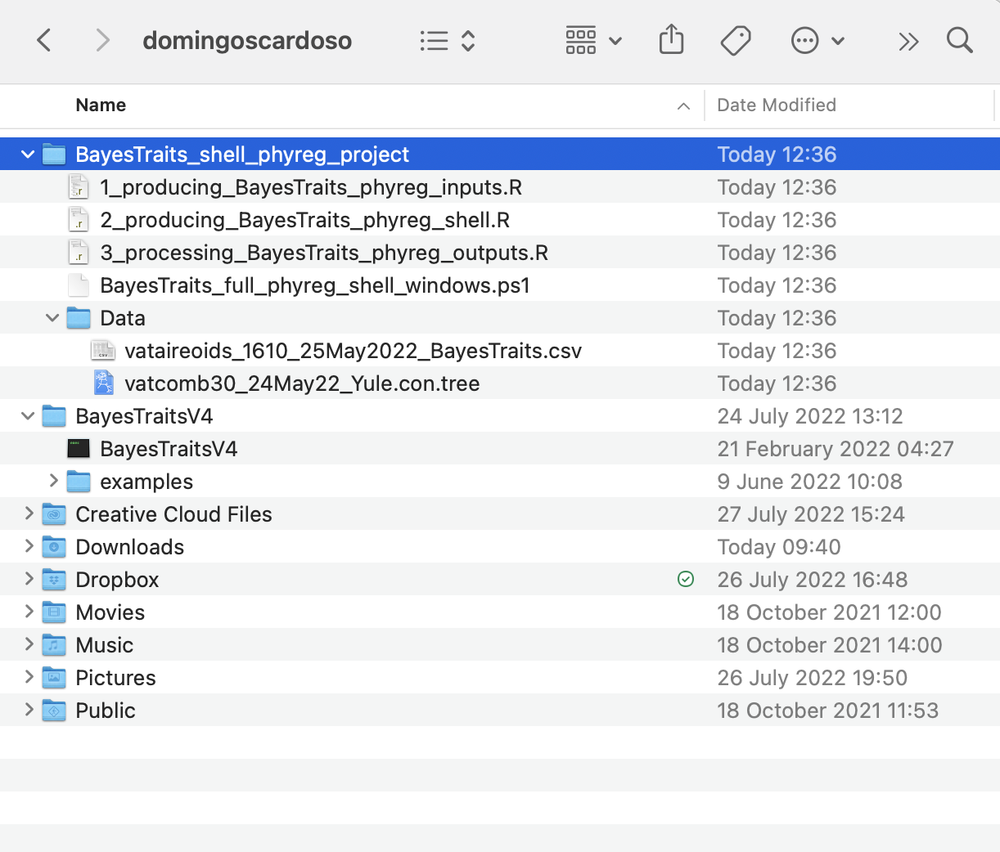

Fully automated regression analysis and log processing with a shell script
Source:vignettes/articles/independent_contrast_regression_shell_project.Rmd
independent_contrast_regression_shell_project.Rmd
The main goal of the InNOutBT package is to readily create input data and process output data for Meade & Pagel’s (2022) BayesTraits program.
Here in this article, we show how to use InNOutBT’s function BayesTraits.shell.reg.proj for producing shell scripts and associated run commands of BayesTraits phylogenetic independent contrast regression analyses. Basically, the function BayesTraits.shell uses the directory paths to the tree, mean and linked data files as created with BayesTraits.inputs (see article here), to automatically produce shell scripts in both Unix and Windows PowerShell formats. The resulting single shell script file can then be used for running one or all-in-once multiple BayesTraits phylogenetic regressions, without manually setting new analyses with new parameters. The shell script produced with BayesTraits.shell should have thus all parameters for all analyses with any defined model. In addition to save the shell script directly in BayesTraits directory, the function saves all the separate running files with BayesTraits specified parameters (bi, it, sa, and st) for any run, depending on the chosen model of tree transformation. See BayesTraits V4.0.0 Manual for further details on each of BayesTraits parameters available for phylogenetic regression so as to better understand how to set the arguments of BayesTraits.shell.
Setup
InNOutBT is not on CRAN yet but you can install the latest development version from GitHub:
#install.packages("devtools")
devtools::install_github("DBOSlab/InNOutBT")Creating a Unix shell project folder
Set the argument syst = "unix" to create a shell script for running the phylogenetic regressions with macOS Monterey.
Note that you should give the name of the response variable of your analysis in the argument responvar. Also, you should use the argument treetransf to define any or all (listed as a vector) available tree transformation models that you want to run the phylogenetic regressions with your input data.
library(InNOutBT)
BayesTraits.shell.reg.proj(dir_create_proj = "/Users/domingoscardoso",
syst = "unix")
Note that…
Running the Unix shell script
After using the function BayesTraits.shell.reg.proj with all the needed parameters, you have to set permission to the shell script to run automatically all the phylogenetic regression analyses with BayesTraits program. You can just follow the steps below.
1. Open the terminal;
2. Go to the BayesTraits program folder where you have saved the shell script file .sh and the associated running and input data files with the function BayesTraits.shell. The shell script should be named BayesTraits_full_shell_unix.sh;
3. Execute the following line:
chmod 777 BayesTraits_full_shell_unix.sh
4. Then perform the BayesTraits run using the shell script by executing the following line:
./BayesTraits_full_shell_unix.sh
Creating a Windows PowerShell project folder
Set the argument syst = "windows" to create a PowerShell script for running the phylogenetic regressions with Windows.
BayesTraits.shell.reg.proj(dir_create_proj = "/Users/domingoscardoso",
syst = "windows")
Note that…
Running the Windows PowerShell script
After using the function BayesTraits.shell.reg.proj with all the needed parameters, you have to set permission to the PowerShell script to run automatically all the phylogenetic regression analyses with BayesTraits program. You can just follow the steps below, but you may also want to find further information on how to use Windows PowerShell.
1. Open PowerShell as Administrator;
2. Go to the BayesTraits program folder where you have saved the PowerShell script file .ps1 and the associated running and input data files with the function BayesTraits.shell. The PowerShell script should be named BayesTraits_full_shell_windows.ps1;
3. Execute the following line and choose option [Y]Yes;
Set-ExecutionPolicy -ExecutionPolicy RemoteSigned -Scope LocalMachine
4. Execute the following line:
Unblock-File -Path .\BayesTraits_full_shell_windows.ps1
5. Then perform the BayesTraits run using the PowerShell script by executing the following line:
.\BayesTraits_full_shell_windows.ps1
See also the associated articles on how to set the parameters to create input files with BayesTraits.inputs for the phylogenetic regression analyses, as well to create the internal shell script with BayesTraits.shell for the actual BayesTraits runs, and to process the resulting output files with BayesTraits.outputs.